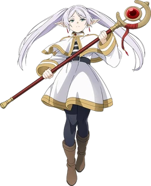

Stark
Human, Warrior, 18

Fern
Human, Mage, 18

Frieren
Elf, Mage, Over 1000
Stark
Eisen’s adoptive son and former student
He is outwardly emotional and impatient,
he struggles with his fear of powerful enemies
But he is kind and strong, no matter where he goes people adore him
Fern
Frieren's apprentice and a very talented mage
She too is impatient and emotional, but very caring
Her love for magic makes her curious like her master Frieren
Frieren
The mage of the legendary Hero's party
Owing it to her lifespan, she is detached from the world
She has instead dedacated her life to studying magic
© 2024 Sousou No Frieren | Privacy Policy | Support